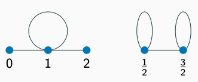
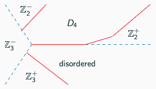

I am a second year DPhil student in theoretical condensed matter physics at the University of Oxford, supervised by Paul Fendley. My current research focuses on non-invertible symmetries and topological defects in quantum lattice models. More broadly, I am interested in using conformal field theory, integrability and categorical symmetries to understand strongly correlated quantum systems.
Prior to my doctoral studies, I completed my undergraduate studies in Physics at LMU Munich, followed by the Part III Master in Applied Mathematics and Theoretical Physics at the University of Cambridge. Throughout my undergraduate studies I was supported by the Maximilianeum Foundation and the Max Weber Programme. For my stay in Cambridge, I received a scholarship from the German Academic Exchange Service (DAAD).News
- Our preprint "From the XXZ chain to the integrable Rydberg-blockade ladder via non-invertible duality defects" is now on arXiv!
- I presented a poster on critical lines in the Rydberg-blockade ladder at the Workshop on Entanglement Scaling and Criticality at EPFL in December 2022.
- Our paper "If your data distribution shifts, use self-learning" was accepted at Transactions on Machine Learning Research.
- At the summer school on quantum dynamics at ICTP in Trieste, I gained insights into various frontiers in condensed matter research, including quantum many-body localization and topological quantum matter.
Interests
- Categorical symmetries and topological defects on the lattice
- Quantum criticality and 2d conformal field theory
- Integrable spin chains
- Probabilistic and statistical theories of learning
Education
| 2021 - today | University of Oxford, DPhil Theoretical Physics
topological defects, quantum criticality, integrable lattice models |
| 2020 - 2021 | University of Cambridge, MaSt Part III
statistical field theory, percolation, modern statistical methods, distribution theory Part III essay on directed percolation and absorbing-state phase transitions |
| 2018 - 19 | University of Oxford, Visiting MPhil student
Quantum field theory, conformal field theory, quantum matter |
| 2016 - 20 | LMU Munich, B.Sc. Physics
condensed matter, quantum information; Bachelor’s thesis on topological quantum memories |
Projects
-
Luisa Eck, Paul FendleyWe discuss duality mappings between four different quantum lattice models, including the spin 1/2 XXZ chain and a model describing Rydberg-blockade atoms on a square ladder, as well as the non-invertible symmetries in these models.
-
Critical lines and ordered phases in the Rydberg-blockade ladder
in preparationLuisa Eck, Paul FendleyWe explore the phase diagram of the Rydberg-blockade ladder away from the integrable line and find different symmetry-broken and disordered phases together with first and second order phase transitions between them.